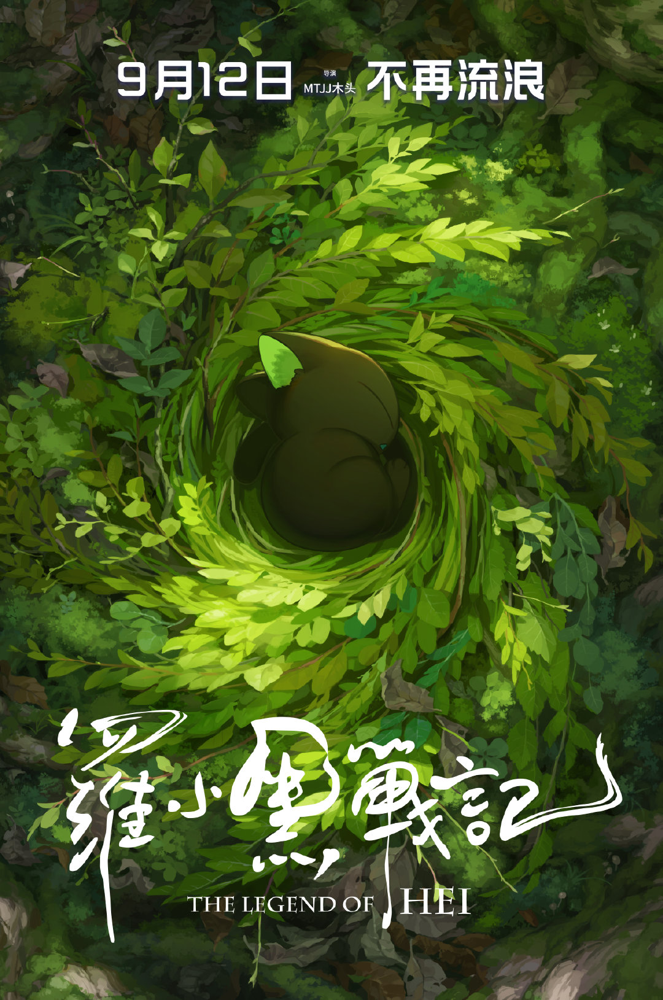
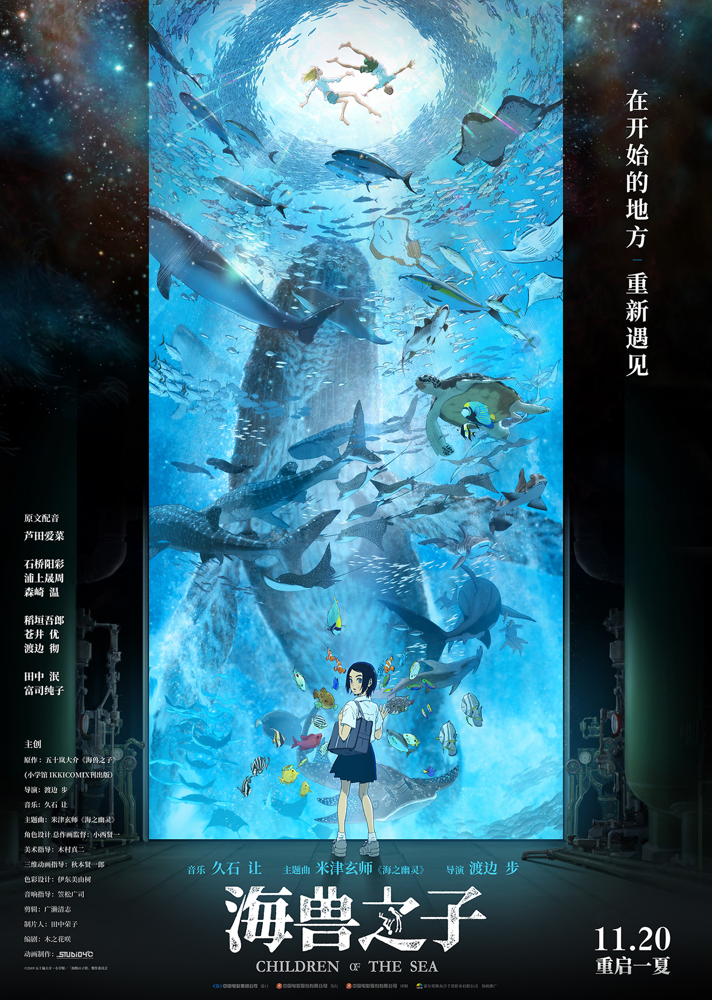
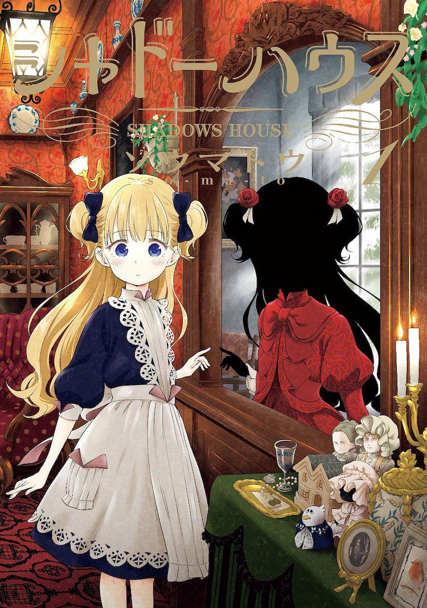
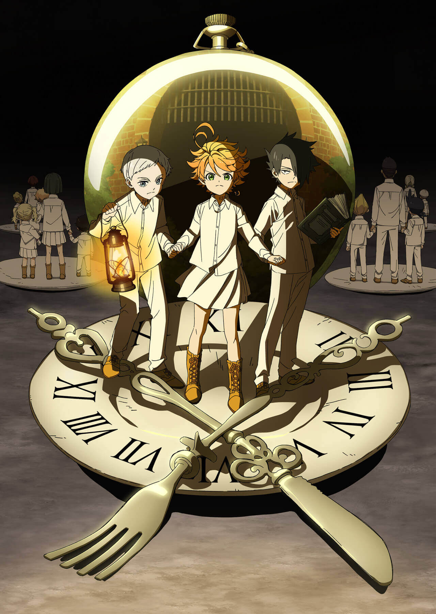
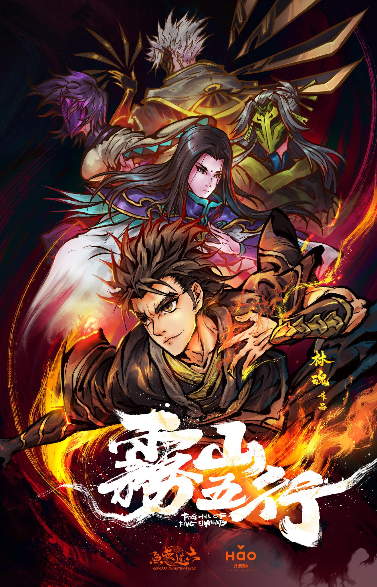

| 夏日幽灵 | ▶夏日幽灵（Summer Ghost）◀ “知道夏日幻魂吗？”通过网络相识的高中生，友也、葵、凉。据称，都市传说中被称作“夏日幻魂”的是一位年轻女性的幽灵，只要燃放烟花她就会现身。无法迈向心仪人生的“友也”寻找不到容身之处的”葵”美好未来不翼而飞的”凉”他们分别有着必须见到夏日幻魂的理由。在生与死交织的夏夜，三人各自的思虑会迈向何方呢—— 导演: Loundraw 编剧: 乙一 / Loundraw 类型: 短片 / 奇幻 / 治愈 |
|---|---|
 奇蛋物语 奇蛋物语 | ▶奇蛋物语（Wonder Egg Priority）◀ 14岁少女·大户爱在深夜散步的途中，随着神秘声音的指引，获得了一枚「蛋」。「如果想要改变世界的话」「那么就在现在做出选择」「请相信自己——」「打破这枚蛋——」而在打破「蛋」之后，等待着爱的是…… 导演: 若林信 / 山崎雄太 / 高雄统子 / 牛岛新一郎 编剧: 野岛伸司 类型: 剧情 / 动作 / 惊悚 / 奇幻 |
 你好世界 你好世界 | ▶HELLO WORLD◀ 在京都居住的内向男高中生直实（北村匠海 配音）的面前，突然出现从10年后穿越而来26岁的自己（松坂桃李 配音）。未来的直实告诉他，自己不久便会与琉璃（滨边美波 配音）相爱，可是之后烟花大会时她却会因为一场事故意外离世。 为了拯救爱人，16岁的直实卷入了这场现实与虚拟的记忆世界，经历了一系列超乎想象的事情。即使世界毁灭，我也想再见你一面。 导演: 伊藤智彦 编剧: 野崎惑 类型: 爱情 / 奇幻 |
 新·福音战士剧场版：终 新·福音战士剧场版：终 | ▶新·福音战士剧场版：终 シン・エヴァンゲリオン劇場版:│▌◀ 成为“第三次冲击”元凶的碇真嗣，变得像废人一样……真嗣还能振作起来吗？2012年《福音战士新剧场版：Q》之后，这部动画讲述了被封印的故事的后续。 导演: 庵野秀明 / 鹤卷和哉 / 中山胜一 / 前田真宏 编剧: 庵野秀明 类型: 剧情 / 科幻 |
| 86 -不存在的战区 | ▶86-不存在的战区-（86 Eighty-Six）◀ 讲述少年少女驾驶「有人驾驶的无人机」于「不存在的第86区」奋战，少年「辛」，与透过特殊通信指挥作战的指挥管制官少女「蕾娜」壮烈而悲伤的战斗与离别的故事。 导演: 石井俊匡 编剧: 大野敏哉 类型: 科幻 / 战争 |
 86 -不存在的战区- Part.2 86 -不存在的战区- Part.2 | ▶86-不存在的战区- part.2（86 Eighty-Six: Part 2）◀ 为了应对吉亚迪所开发出的完全独立无人战斗兵器“军团”的入侵，其邻国圣格诺利亚共和国开发了无人战斗兵器毁灭之力。但是，无人战斗机只是空有名号，实际是没有被认可为”人“的人们——86——驾驶，被当作道具来使用。 由”86“所组成的部队“先锋战队”的队长少年・辛艾，在只能等待着死亡的令人绝望的战场上为了某个目的而战斗着。在那里，共和国军队的精英・蕾娜就任了新任指挥管制官。她小时候有着被86所救助过的经历，因此想把被作为“人形猪”而遭到轻视的他们作为正常人类来对待。 只不过是为了战斗而被作为道具使用的少年以及被寄予了未来期望的精英才女，本不应当有所交集的两人，在激烈的战斗中看到了未来—— 导演: 石井俊匡 编剧: 大野敏哉 / 永井千晶 / 砂山藏澄 类型: 科幻 / 战争 |
 小魔女学园 TV版 小魔女学园 TV版 | ▶小魔女学园 TV版◀ 小时候看过夏依妮·莎莉温的魔法表演后，梦想成为魔女的阿科，进入了与莎莉温相同的传统魔女育成名门校“露娜诺娃魔法学校”。 新的城镇，新的学校生活，以及新遇到的朋友。魔女学校中的扫帚飞行课程以及充满魔法气息的不可思议的授课等等，在这些只有魔女学校中才有的课程当中，阿科与萝特、苏西等人引发了大骚动！ 将露娜诺娃卷入其中，阿科成为魔女的第一步就此开始—— 导演: 吉成曜 / 宫岛善博 / 金子祥之 / 筱原启辅 / 下平佑一 / 铃木芳成 / 有富兴二 / 粟井重纪 编剧: 岛田满 / 上野贵美子 / 樋口七海 / 佐藤裕 / 大冢雅彦 类型: 剧情 / 奇幻 |
| 神之塔 | ▶神之塔-Tower of God- ◀ 如果登上塔，一切就都可以得到。 塔顶上有着这世界上的一切，可以得到这个世界……成为神。 为了欣赏星空而登塔的少女·蕾哈尔，以及如果有蕾哈尔这样的女朋友就什么也不需要了的少年·二十五夜，他们之间的故事开始了。 导演: 佐野隆史 / 村田雅彦 / 矢野雄一郎 / 松村树里亚 / 工藤宽显 / 土屋康郎 / 佐藤光 编剧: 吉田惠里香 类型: 科幻 / 奇幻 / 冒险 |
| 夏日重现 | ▶夏日重现 ◀ 《#夏日重现#》是作者田中靖规创作的漫画作品。近日，该漫画宣布完结，同时动画化、真人化和现实逃脱游戏化。 动画PV链接：https://www.bilibili.com/video/BV1nT4y1o75T 青梅竹马的潮死了——。听闻这个悲报，慎平回到了阔别已久的故乡和歌山市·日都岛与家人再会并出席葬礼。但是岛上貌似陡生异变，充斥着不寻常的气息……？ 导演: 渡边步 编剧: 濑古浩司 类型: 悬疑 / 惊悚 |
| 心理测量者 | ▶心理测量者1 PSYCHO-PASS サイコパス◀ 这是一个人类内心活动均能够数值化的科技时代，同样能被量化的，还有每个人的“犯罪系数”，而原先的调查和侦破都被犯罪系数的检测所替代。维持治安逮捕罪犯的职责，当然落在了警察们的头上，但同时，这些惩奸除恶的执行官们，本身就是拥有着高犯罪系数的危险人物，因此，另一批专门监视他们的“监视官”应运而生。 作为一名执行官，狡噛慎也（关智一 配音）有着极强的业务能力，在同其监视官常守朱（花泽香菜 配音），同事征陆智己（有本钦隆 配音）、縢秀星（石田彰 配音）、六合冢弥生（伊藤静 配音）的合作下，制服了一个又一个险恶的犯罪分子。但是在执行任务的同时，慎也也对这套全靠数据说话的系统产生了怀疑。 导演: 本广克行 / 盐谷直义 / 川崎逸朗 / 滨名孝行 / 石黑恭平 / 吉泽俊一 / 河野利幸 / 铃木薰 / 西本由纪夫 / 平田丰 / 酒井和男 / 左藤洋二 / 野亦则行 / 江岛泰男 / 永居慎平 / 远藤广隆 编剧: 虚渊玄 / 深见真 / 高羽彩 类型: 动作 / 犯罪 |
| 心理测量者3 | ▶心理测量者3 PSYCHO-PASS サイコパス 3 ◀ “正义”，将新世界切开。 将灵魂数值化的巨大监视网络·西比拉系统维持着人类治安的近未来。在不断改变的世界中，刑警们手持用于测定与犯罪有关的数值“犯罪系数”的枪支“Dominator”，追捕着犯下罪行之前的“潜在犯”。 于2012年启动的原创TV动画作品《PSYCHO-PASS 心理测量者》的第三期作品，是两位新人监视官的故事。慎导灼与炯·米哈伊尔·伊格纳托夫，成为厚生省公安局的刑警，在这个不断改变的世界中追寻着真实。 导演: 盐谷直义 / 本广克行 编剧: 冲方丁 / 深见真 / 吉上亮 类型: 剧情 / 犯罪 |
| 间谍过家家 | ▶间谍过家家 ◀ 为了潜入名校，西国能力最强的间谍<黄昏>被下令组建家庭.但是，他的“女儿”居然是能够读取他人内心的超能力者！“妻子”是暗杀者？互相隐藏了真实身份的新家庭，面临考验与世界危机的痛快家庭喜剧就此展开！！ 导演: 古桥一浩 编剧: 古桥一浩 / 河口友美 类型: 谍报 / 动作 / 家庭 / 喜剧 |
| ▶紫罗兰永恒花园 ◀ 某个大陆的、某个时代。 大陆南北分割的战争结束了，世界走向了和平。 在战争中作为军人的薇尔莉特•伊芙加登，怀抱着对她来说无比重要之人留下的“话语”，离开军队来到了大港口城市。 踊跃的人群在排列着煤气灯的街道马路上来来往往地穿梭着。薇欧瑞特在街道上找到了“代写书信”的工作。那是根据委托人的想法来组织出相应语言的工作。 她直面委托人、触碰着他们内心深处的坦率感情。与此同时，薇欧瑞特在记录书信时，渐渐明白那“话语”的含义。 导演: 石立太一 / 藤田春香 / 木上益治 / 武本康弘 / 小川太一 / 山村卓也 / 北之原孝将 编剧: 吉田玲子 / 浦畑达彦 / 铃木贵昭 / 晓佳奈 类型: 治愈 / 励志 / 职场 | |
| 夏日大作战 | ▶夏日大作战 ◀ 高中生小矶健二是一个老实内向的数学天才，夏日的一天，他应邀来到美丽的学姐——阵内夏希的家乡打工。结果发现，打工的内容竟是假扮夏希的男友。阵内家祖上曾是与德川军团殊死激战的武士家族，数百年过去，刚硬顽强的性格仍在深深植根于这个家族的灵魂之中。最初的拘谨过后，健二渐渐融入这 个热闹的大家庭。 在当时的世界，一个名为“OZ”的网络虚拟平台风靡全球，16亿人为之神魂颠倒。它拥有号称世上最安全的防御系统，但其登录密码无意中被健二所破解。神秘黑客入侵OZ，虚拟网络和现实社会顿时陷入混乱。危急时刻，阵内一家重拾武士家族的责任与荣誉，与破坏者A.I.展开了紧张激烈的夏日大作战…… 导演: 细田守 编剧: 奥寺佐渡子 类型: 喜剧 / 科幻 / 家庭 / 冒险 |
 哈尔的移动城堡 哈尔的移动城堡 | ▶哈尔的移动城堡 ◀ 继母因无力负担生活，将苏菲和她的两个妹妹都送到了制帽店去当学徒。两个妹妹很快先后就离开了制帽店去追寻各自的梦想，只有苏菲坚持了下来。一天，小镇旁边来了一座移动堡垒，传说堡垒的主人哈尔专吸取年青姑娘的灵魂，所以小镇的姑娘都不敢靠近。 一个恶毒的巫婆为了报复苏菲与哈尔见面，用巫术把她变成了一个80岁的老太婆，而且苏菲还不能对别人说出自己身中的巫术。无奈，苏菲决定独自一人逃离小镇。天黑了，虚弱的苏菲没走多远，来到了移动城堡。心想自己已经是老太婆了，苏菲壮着胆子走进了城堡。不想，遇到了和她遭遇相同的火焰魔。两人约定彼此帮助对方打破各自的咒语…… 导演: 宫崎骏 编剧: 宫崎骏 / 黛安娜·温恩·琼斯 类型: 奇幻 / 冒险 |
 千与千寻 千与千寻 | ▶千与千寻 ◀ 千寻和爸爸妈妈一同驱车前往新家，在郊外的小路上不慎进入了神秘的隧道——他们去到了另外一个诡异世界—一个中世纪的小镇。远处飘来食物的香味，爸爸妈妈大快朵颐，孰料之后变成了猪！这时小镇上渐渐来了许多样子古怪、半透明的人。 千寻仓皇逃出，一个叫小白的人救了他，喂了她阻止身体消 失的药，并且告诉她怎样去找锅炉爷爷以及汤婆婆，而且必须获得一份工作才能不被魔法变成别的东西。 千寻在小白的帮助下幸运地获得了一份在浴池打杂的工作。渐渐她不再被那些怪模怪样的人吓倒，并从小玲那儿知道了小白是凶恶的汤婆婆的弟子。 一次，千寻发现小白被一群白色飞舞的纸人打伤，为了救受伤的小白，她用河神送给她的药丸驱出了小白身体内的封印以及守封印的小妖精，但小白还是没有醒过来。 为了救小白，千寻又踏上了她的冒险之旅。 导演: 宫崎骏 编剧: 宫崎骏 类型: 剧情 / 奇幻 |
| 鬼灭之刃 | ▶鬼灭之刃 ◀ 日本大正时期，那是一个吃人的恶鬼横行的世界，一名家人被鬼杀死，妹妹也变成了鬼的主人公炭治郎，在猎鬼人的指引下，成为了鬼猎人组织“鬼杀队”的一员，为了让妹妹祢豆子变回人类，为了讨伐杀害家人的恶鬼，为了斩断悲伤的连锁而展开了战斗。 导演: 外崎春雄 / 细川秀树 / 间岛崇宽 / 伊藤祐毅 / 野中卓也 / 五味伸介 / 宫原秀二 / 高桥贤 编剧: 吾峠呼世晴 / ufotable 类型：魔幻 / 战斗 / 热血 |
 致不灭的你 致不灭的你 | ▶致不灭的你 ◀ 作品故事描述，某人把「球」放进这片土地。具备收集情报的机能，还可以变换各种外貌，那个球体甚至连死亡都能超越。某天，它遇见了少年，之后又分开。光线、味道、声音、温度、痛苦、喜悦、哀伤……在这个充满刺激的世界里徘徊，展开一段永恒之旅。 由大今良时所着漫画作品《给不灭的你》，官方于今1月9日宣布改编电视动画的消息，预定将于10月在日本开播。 导演: 村田雅彦 / 山内东生雄 编剧: 藤田伸三 / 大今良时 类型: 奇幻 / 冒险 / 战斗 |
| 多罗罗 | ▶多罗罗 ◀ 时为战国。醍醐之国主景光，在某所寺院的大堂中，向12尊鬼神像许愿领土繁荣。作为交换而诞生的景光之后嗣，身体各处都有所欠缺，被视作不祥之子而抛弃到河川之中。时光流逝，鬼神实现了与景光的约定，国家迎来了平安。这样的某天，名为“多罗罗”的年幼盗贼，与某个男人相遇。 那是鬼，还是人——两臂装有刀剑，全身皆为人造的男人“百鬼丸”，其无光之瞳紧紧盯着袭来的妖魔。 导演: 古桥一浩 编剧: 小林靖子 类型: 奇幻 / 古装 |
| 你的名字。 | ▶你的名字。 ◀ 在远离大都会的小山村，住着巫女世家出身的高中女孩宫水三叶（上白石萌音 配音）。校园和家庭的原因本就让她充满烦恼，而近一段时间发生的奇怪事件，又让三叶摸不清头脑。不知从何时起，三叶在梦中就会变成一个住在东京的高中男孩。那里有陌生的同学和朋友，有亲切的前辈和繁华的街道，一切都是如此诱人而真实。另一方面，住在东京的高中男孩立花泷（神木隆之介 配音）则总在梦里来到陌生的小山村，以女孩子的身份过着全新的生活。许是受那颗神秘彗星的影响，立花和三叶在梦中交换了身份。他们以他者的角度体验着对方的人生，这期间有愤怒、有欢笑也有暖心。只是两人并不知道，身份交换的背后隐藏着重大而锥心的秘密…… 导演: 新海诚 编剧: 新海诚 类型: 爱情 / 剧情 |
 借东西的小人阿莉埃蒂 借东西的小人阿莉埃蒂 | ▶借东西的小人阿莉埃蒂 ◀ 虽然患有心脏方面的疾病，但是少年翔（神木隆之介 配音）的父母依然对他疏于呵护。为了准备即将到来的手术，翔来到了位于偏远乡间的姨婆（竹下景子 配音）家静养。姨婆家位于一片幽静的丛林中，这是一幢有着上百年历史的欧式别墅。这里除了生活着姨婆和女佣阿春（树木希林 配音）外，还有一个奇特的三口之家，“借东西一族”——小人阿莉埃蒂（志田未来 配音）和她的爸爸（三浦友和 配音）妈妈（大竹忍 配音），他们生活在别墅的地板下，只有几公分高，过着不为人类察觉的生活。遇到所需的日常用品时，便会在夜深人静之时偷偷潜入厨房借出来。翔无意中瞥见阿莉埃蒂的身影，他有心接近这些传说中的小人，却不知不觉打扰了他们的生活…… 本片根据英国作家玛丽·诺顿的原著《借东西的小人》改编，并荣获2011年日本电影学院奖最佳动画片奖。 导演: 米林宏昌 编剧: 宫崎骏 / 丹羽圭子 / 玛丽·诺顿 类型: 奇幻 / 冒险 |
| 记忆中的玛妮 | ▶记忆中的玛妮 ◀ 初中女孩佐佐木杏奈（高月彩良 配音）深藏无限的愁绪心事，她与疼爱自己的养母赖子（松岛菜菜子 配音）也无法坦然相对。由于上学期间突发过呼吸的情况，于是杏奈利用暑假来到了北海道釧路湿原地区的一座小镇，在亲戚大岩清正（寺岛进 配音）和阿节阿姨（根岸季衣 配音）家疗养。在叔叔家不远处 的溪地，矗立着一座老旧但风韵独存的西式建筑，奇妙的感觉令杏奈注意到了它的存在。某个夜晚，心情低落的杏奈划着小船超该建筑划去，结果发现本该许多年没人居住的房子居然灯火通明，并且她在那里邂逅了与之年龄相仿的金发碧眼女孩玛妮（有村架纯 饰）。相似的心境让两个女孩成为好朋友，她们依恋着彼此，却不知各自的心底隐藏着怎样令人难以置信的因缘…… 导演: 米林宏昌 编剧: 丹羽圭子 / 安藤雅司 / 米林宏昌 / 琼·G·罗宾逊 类型: 剧情 / 奇幻 |
| 狼的孩子雨和雪 | ▶狼的孩子雨和雪 ◀ 在某国立大学念书的花（宫崎葵 配音）与偶然来校旁听的男子（大泽隆夫 配音）坠入爱河，即使对方是一名狼人，她也义无反顾投入对方怀抱。此后的岁月里，花先后生下女儿小雪和儿子小雨。谁知厄运突然降临，温柔的丈夫撒手人寰。柔弱而坚强的花竭尽全力抚养两个孩子长大，吃穿用度，衣食住行 ，无一不牵扯她的心思。而子女狼人的身份也迫使他们离开繁华大都市，前往宁静的山野乡村求生。他们在一栋古旧的民房内落脚，小雪顽劣张扬，小雨纤细内敛，姐弟俩以狼的身姿穿行于深山密林，享受着前所未有的快乐与自由。在此期间，以韭崎爷爷（菅原文太 配音）为代表的村民也给花一家带来无微不至的关怀。小雪和小雨渐渐长大，他们也终于迎来决定身份和前路的重要时刻…… 导演: 细田守 编剧: 奥寺佐渡子 / 细田守 类型: 剧情 / 家庭 / 奇幻 |
| 冰海战记 | ▶冰海战记◀ 公元10世纪末期，世界各地出现了只做战争掠夺的最强民族·维京人。被讴歌为最强战士的儿子·托尔芬，自小便生活在战场上，并向往着梦幻大陆“文兰（VINLAND）”—— 这是一个发生在激荡时代的，真正的战士物语。 导演: 薮田修平 / 越田知明 / 左藤洋二 / 松林唯人 / 江岛泰男 / 内田信吾 / 平向智子 / 安藤贵史 / 小林敦 / 吉川志我津 / 须之内佑典 / 黑濑大辅 编剧: 濑古浩司 / 猪原健太 / 幸村诚 类型: 冒险 / 历史 / 战争 / 热血 |
| 朝花夕誓 | ▶朝花夕誓◀ 故事发生在一座名为伊奥鲁夫的城市中，在这里出生的人们拥有无限的寿命，外表却会定格在15岁的模样，玛奇亚（石见舞菜香 配音）就是这样一个土生土长的伊奥鲁夫少女。一天，为了抢夺永生之血，梅萨蒂军乘坐着古代神兽对伊奥鲁夫发动了空袭，造成了惨重的损失，玛奇亚的好友蕾莉亚（茅野爱衣 配音）被掠走了，和蕾莉亚一起失踪的，还有玛奇亚暗恋的少年克里姆（梶裕贵 配音）。 在黑暗的森林里，幸存的玛奇亚捡到了一名男婴，他的双亲在之前的袭击中丧生了。玛奇亚以母亲的身份收养了他，给他取名为艾瑞尔（入野自由 配音）。 导演: 冈田麿里 / 筱原俊哉 编剧: 冈田麿里 类型: 奇幻 |
| 四月是你的谎言 | ▶四月是你的谎言◀ 有马公生的母亲一心想把公生培育成举世闻名的钢琴家，而公生也不负母亲的期望，在念小学时就赢得许多钢琴比赛的大奖。11岁的秋天，公生的母亲过世，从此他再也听不见自己弹奏的钢琴声，沮丧的他也只好放弃演奏，但在14岁那年，经由儿时玩伴的介绍，公生认识了小提琴手宫园薰，并被薰的自由奔放吸引，没想到薰竟开口邀请公生在比赛时担任她的伴奏… 导演: 石黑恭平 / 石滨真史 / 柴山智隆 / 石井俊匡 / 岩田和也 / 井端义秀 / 高桥英俊 / 原田孝宏 / 中村章子 / 黑木美幸 / 仓田绫子 / 河野亚矢子 / 间岛崇宽 / 川越崇弘 / 福岛利规 / 矢岛武 / 小岛崇史 编剧: 吉冈孝夫 / 新川直司 类型: 剧情 / 音乐 |
| 刀剑神域：序列之争 | ▶刀剑神域：序列之争◀ 2022年，天才编程者茅场晶彦所开发的世界最早的完全潜行专用装备设备《NERvGear》。 这个革命性的机器给VR（假想现实）世界带来了无限的可能性。那之后经过了4年。 《NERvGear》的后继品VR机为了对抗《AmuSphere》（第二代民用完全潜行机），发售了一个次世代的可穿戴设备《Augma》 替换了完全潜行机能，是一个对AR（增强现实）功能进行了最大限度扩大的最先进机种。 由于《Augma》在觉醒状态下也可以安全和便利地使用，因此一瞬间便在玩家当中传开了。 这个杀手级内容，被叫做《Ordinal Scale序列之争（OS）》，是《Augma》专用的ARMMO RPG。 亚斯娜和伙伴们会玩的这个游戏，桐人也准备参战了。 导演: 伊藤智彦 编剧: 川原砾 类型: 科幻 / 冒险 |
| 普罗米亚 | ▶普罗米亚◀ 因突变而产生操作火焰的变种人“燃烧者”，让半个世界被大火烧成焦土，陷入前所未见的惨状。在那之后的30年，当中一群激进份子“疯狂燃烧者”再次对世界发动攻击。为了镇压他们引发的火灾，普罗米波利斯自治共和国司政官古雷，组织了针对“燃烧者”而设置的高机动救命消防队“烈焰救火队”。效命于“烈焰救火队”，并拥有灭火之魂的消防队新人加洛，碰上了被通缉中的纵火恐怖份子，“疯狂燃烧者”的首领里欧，两人发生了激烈的冲突，当两个炙热灵魂彼此冲撞，这场对决将走向什么结局？ 导演: 今石洋之 编剧: 中岛一基 类型: 剧情 / 动作 / 科幻 |
| 罗小黑战记 | ▶罗小黑战记◀ 在熙攘的人类世界里，很多妖精隐匿其中，他们与人类相安无事地生活着。猫妖罗小黑因为家园被破坏，开始了它的流浪之旅。这场旅途中惺惺相惜的妖精同类与和谐包容的人类伙伴相继出现，让小黑陷入了两难抉择，究竟何处才是真正的归属？ 导演: 木头 编剧: 木头 / 彭可欣 / 风息神泪 / 李冠萱 类型: 动作 / 奇幻 |
| 龙与雀斑公主 | ▶龙与雀斑公主◀ 影片讲述着在一个拥有50亿用户的元宇宙U中，每个人都能开启自己的人生。17岁高中生铃，因年幼时母亲离世而变得沉默寡言。她不愿与父亲交流，不愿再开口唱歌，甚至对一直守护自己的阿忍也渐行渐远。为逃离灰色的生活，铃选择进入元宇宙的世界，摇身一变迅速走红成为闪耀的顶流歌姬。此时，她的巨星之路随着“竜”的意外闯入，而演变成一场充满未知的冒险出逃。雀斑公主和神秘“恶竜”的真身有着怎么样的纠葛？他们又该如何用爱和勇气对抗现实的刺痛？ 导演: 细田守 编剧: 细田守 类型: 科幻 / 冒险 |
| 卡罗尔与星期二 | ▶卡罗尔与星期二（CAROLE & TUESDAY）◀ 距离人类移居到新的基地火星已经过了50年。这个时代中大多数的文化均由AI创造，人类只需要享受即可。有一位女孩，在首都阿尔巴市努力生活，在工作之余的空闲时间努力成为一名音乐家，她总觉得缺少些什么。她的名字是Carole。有一位女孩，出生在赫舍尔市的富裕家庭，她的梦想是成为 一名音乐家，但是周围却没有人能够理解她的想法，她觉得自己是全世界最孤独的人。她的名字是Tuesday。 一个机遇促使两人相遇。她们希望歌唱。她们希望放声。如果是两个人一起的话，她们就觉得有机会能做到。她们也许只会掀起微小波澜，但这微小的波澜却可能会化作巨浪… 导演: 渡边信一郎 / 堀元宣 / 野亦则行 / 村田尚树 / 飞田刚 / 高藤聪 / 三宅将平 / 由井翠 / 宫泽良太 编剧: 三重野瞳 / 信本敬子 / 上野贵美子 / 野村祐一 / 中西泰博 / 渡边信一郎 类型: 科幻 / 音乐 |
| 女神异闻录5 | ▶女神异闻录5◀ 高中二年级的春天，雨宫莲转学至东京的“秀尽学园”。以某个事件为契机觉醒为“PERSONA”使者的莲，与新认识的伙伴们一同组成“心之怪盗团”。把沾满邪恶欲望的大人们的“扭曲欲望”给偷走，让其改过自新。另一方面，在城市中陆续发生了不可思议的精神暴走事件…… 以大都会“东京”为舞台，作为高中生过着日常生活的同时，放学后作为“心之怪盗团”活跃——。壮大的歹徒传奇就此拉开序幕！ 导演: 石滨真史 / 田口智久 / 山口赖房 / 柴田彰久 / 福岛利规 / 南川达马 / 大桥一辉 / 笹原嘉文 / 原田征尔 / 丸山裕介 / 江副仁美 / 小坂春女 / 上田慎一郎 编剧: 猪爪慎一 / 木村畅 / 兵头一步 类型: 剧情 / 奇幻 |
| 齐木楠雄的灾难 | ▶齐木楠雄的灾难◀ 齐木楠雄（神谷浩史 配音）是一名十六岁的高中二年级学生，从一出生开始，他便是一名全能超能力者，几乎掌握了一切叫得上名字的超能力，这表面上让人无比羡慕的特质却让齐木楠雄的生活陷入了无聊的绝望之中，因为他几乎不用付出任何的努力，便可以为所欲为。于是，齐木楠雄封印了自己的超能力，致力于做一个默默无闻的普通人。 然而，齐木楠雄的身上似乎散发着吸引怪咖的电波，笨蛋不良少年燃堂力（小野大辅 配音）、中二病末期患者海腾顺（岛崎信长 配音）、色胆包天的灵能力者鸟束零太（花江夏树 配音）、从头到脚从内到外都闪耀着完美光辉的照桥心美（芽野爱衣 配音），这些千奇百怪个性迥异的怪人们总是一次又一次的将力求平凡的齐木楠雄拖入麻烦之中。 导演: 樱井弘明 / 笠井贤一 / 则座诚 / 富永恒雄 / 高田耕一 / 相浦和也 / 永居慎平 / 奥野浩行 / 铃木拓磨 / 饭村正之 / 岛崎奈奈子 / 铃木轮流郎 / 宫田亮 编剧: 横手美智子 / 横谷昌宏 / 杉原研二 / 麻生周一 类型: 喜剧 / 奇幻 |
| 瓦尼塔斯的笔记 | ▶瓦尼塔斯的笔记◀ 19世纪巴黎×吸血鬼×蒸汽朋克 ——您不曾听说过吗？ 关于将诅咒散播于吸血鬼的那本、机械驱动的魔导书的故事。 现在被“瓦尼塔斯之书”所引导、演员们集结于巴黎。 「潘朵拉之心」的望月淳所带来的吸血鬼谭——开幕。 导演: 板村智幸 编剧: 三重野瞳 类型: 魔幻 / 战斗 |
| 入间同学入魔了 | ▶入间同学入魔了◀ 铃木入间（村濑步 配音）被双亲卖给了魔王沙利文（黑田崇矢 配音），没想到沙利文因为没有子孙后代，所以对身为人类的铃木非常的溺爱。随着铃木渐渐长大，沙利文将他送进了恶魔学校巴比尔斯里深造，想要这所充满了恶魔的学校里生存下去，铃木的首要任务就是隐藏好自己的人类身份。 大大咧咧冒冒失失的瓦拉克（朝井彩加 配音）、外表御姐内心少女的阿萨兹勒（早见沙织 配音）、看上去很聪明其实是个笨蛋的阿斯莫德（木村良平 配音）、拥有强健的体魄和大条的神经的萨伯诺克（佐藤拓也 配音），个性温柔而又善良的铃木很快就在学校里交到了好朋友。 导演: 森胁真琴 编剧: 笔安一幸 类型: 搞笑 / 校园 / 奇幻 |
| 海兽之子 | ▶海兽之子◀ 偶遇到神秘少年“海”（石桥阳彩配）和“空”（浦上晟周配）的这个炎炎夏天，是琉花（芦田爱菜配）暑期的正式开始。天真无邪的“海”，看透一切的“空”，海洋馆里发光的鱼群，对琉花来说都像是一场浪漫的约定如期而至。 导演: 渡边步 编剧: 木之花咲 / 五十岚大介 类型: 奇幻 / 冒险 |
 魔女之旅 魔女之旅 | ▶魔女之旅◀ 改编自白石定规原作的同名轻小说，讲述了虽然年纪轻轻，但已经成为魔法使的最高阶的“魔女”的才女伊蕾娜，作为旅人在全世界自由旅行的故事。 导演: 洼冈俊之 / 高桥顺 / 木村宽 / 嵯峨敏 编剧: 笔安一幸 / 白石定规 类型: 魔幻、冒险 |
 庇护所 SHELTER 庇护所 SHELTER | ▶庇护所 SHELTER◀ 美国电音制作人Porter Robinson与A1联手打造的单曲动画「SHELTER」，故事以在未来的虚拟现实VR世界中醒来的17岁孤独少女·凛（CV：三泽纱千香）为主角，每天操作着平板创造属于自己的空想新世界，而现实世界中的凛却沉睡在小小的宇宙船中… 导演: 赤井俊文 编剧: Porter Robinson 类型: 科幻 【1080P】Shelter(避难所) OVA【中字】 |
 萤火之森 萤火之森 | ▶萤火之森◀ 某年夏天，6岁小女孩竹川萤来到爷爷家度假，她闯进了传说住满妖怪的山神森林。正当她因为迷路而焦急万分的时候，一个戴着狐狸面具的大男孩出现在她面前，并引领着萤找到回家的路。虽然萤分外感激，可是男孩却禁止她碰触自己的身体，原来这名叫银的男孩并非人类，他一旦被人类碰触就会烟消云散。在此后的日子里，萤和银成为好朋友，他们走遍了森林的每一个角落玩耍。日复一日，年复一年，每到夏天的时候萤就会如约来到森林和好朋友见面。她遵守着和银的约定，无论如何也不碰触银的身体。随着年龄的增长，萤和银对彼此的情感都悄悄发生了变化，他们共同期待相聚的日子，共同期待拥抱对方…… 本片根据绿川幸的原作改编。 导演: 大森贵弘 编剧: 绿川幸 类型: 剧情 / 动画 / 奇幻 |
| 鲸鱼之子们在沙丘上歌唱 | ▶鲸鱼之子们在沙丘上歌唱◀ 故事发生在砂刑历93年。一艘名为“泥鲸”的漂泊船上，生活着513名居民。他们分为两个种族——拥有超能力的“印族”，以及没有超能力的“无印族”，相比于印族，无印族拥有更长的寿命。某一日，一个名为莉柯丝（石见舞菜香 配音）的少女被一位名叫查克罗（花江夏树 配音）的少年发现在了废墟之中，当男孩遇见女孩，命运的齿轮开始了转动。 莉柯丝开始了在泥鲸的生活。德高望重即将成为下一任领导人的斯沃（岛崎信长 配音）、对岛屿外的世界充满了好奇的奥尼（梅原裕一郎 配音）、天真可爱不谙世事的萨米（金元寿子 配音），在岛上，每一段相遇都会交织出一段新的乐章。 导演: 石黑恭平 / 樱美胜志 / 桥本敏一 / 村田尚树 / 小林孝志 / 森义博 编剧: 横手美智子 / 梅原阿比 类型: 奇幻 |
 JOJO的奇妙冒险 星尘斗士 JOJO的奇妙冒险 星尘斗士 | ▶JOJO的奇妙冒险 星尘斗士◀ 1989年，日本。 乔纳森·乔斯达与DIO决战后的一百年，DIO复活了。同时，乔瑟夫的孙子，空条承太郎发现自己有幽波纹（替身）能力，DIO的复活影响了没有替身抵抗能力的母亲，陷入病危情况；为了拯救命在旦夕的母亲，承太郎与乔瑟夫出发前往DIO的所在地——埃及。 导演: 津田尚克 / 加藤敏幸 / 铃木健一 / 小仓宏文 / 副岛惠文 / 米田光宏 / 大脊户聪 / 藤本次朗 / 高村雄太 / 山田弘和 / 町谷俊辅 / 玉村仁 / 江副仁美 / 吉川志我津 编剧: 荒木飞吕彦 / 小林靖子 / 笔安一幸 / 猪爪慎一 / 安川正吾 类型: 剧情 / 动作 / 战斗 / 热血 |
 DARLING in the FRANXX DARLING in the FRANXX | ▶DARLING in the FRANXX ◀ 他们拥有梦想。 总有一天，飞向广阔天空的梦想。 知晓被玻璃遮盖的这片天空有多么遥远。 遥远的未来。 人类在荒废的大地上建设了移动要塞都市“种植园”，并讴歌着文明。 在那当中建造的驾驶员居住设施“米斯特汀”，通称“鸟笼”。 孩子们就住在那里。 对外面的世界一无所知。 对自由的天空一无所知。 他们被告知的使命，只有战斗而已。 敌人是一切都被谜团覆盖的巨大生命体“叫龙”。 为了对抗尚未见过的敌人，孩子们乘上被称为“FRANXX”的机器人。 他们坚信，乘坐其中，就是对自己存在的证明。 有一位曾被称作神童的少年。 代号016。名字是广。 但他现在却跌落谷底。 是不被人需要的存在。 如果没有乘上FRANXX，就如同不存在一样。 在这样的广面前，某天，一位被称作02的神秘少女出现了。 她的额头，长着两根艳丽的角。 “——找到了哦，我的DARLING” 导演: 锦织敦史 / 冈本学 / 中村章子 / 高雄统子 / 益山亮司 / 赤井俊文 编剧: 锦织敦史 / 林直孝 / 濑古浩司 / 大冢雅彦 类型: 剧情 / 动作 / 科幻 |
| 电锯人 | ▶电锯人◀ 电次是个背负了父亲遗留下的庞大债务，因此过着极端贫穷生活的少年，他救了恶魔啵奇塔，并与它一起以恶魔猎人的身份斩杀低阶恶魔来换取酬劳。有一天，流氓骗了电次，让他成为一堆恶魔的祭品，电次在临死之际，啵奇塔牺牲自己，把心脏给了他，让他复活并拥有了恶魔的力量，只要一拉位在心脏那边的链子就能发动。之后电次被公安人员看上，因此成为公安的恶魔猎人…… 导演: 中山龙 / 吉原达矢 编剧: 藤本树 / 濑古浩司 类型: 剧情 / 动作 / 奇幻 |
| 强风吹拂 | ▶强风吹拂◀ 夜晚。如同逃跑一般奔驰在城市中的藏原走。他的侧面，突然有辆自行车冲来。素不相识的男子，对阿走发问了。“喂！你很喜欢跑步吧！” 男子的名字是清濑灰二。 就这样，阿走在灰二的引导下，到达了名为竹青庄的老旧公寓。9名个性丰富的住民住在那里。阿走来到最后的空房间，虽然感到困惑，却仍然被强行留下。他怎么也没有想到，自己会成为这里的“第10个男人”……。 导演: 野村和也 / 板津匡览 / 江副仁美 / 佐藤雅子 / 丝贺慎太郎 / 镰田祐辅 编剧: 喜安浩平 / 三浦紫苑 类型: 运动 / 青春 / 竞技 |
| 魔法使的新娘 | ▶魔法使的新娘◀ 羽鸟智世是15岁的少女。 不论是能够回去的地方，还是生存的理由，亦或是活下去的手段，她都一无所有。 除了一种与生俱来的特别力量之外。 将这样的智世收为弟子，以及迎作未来新娘的是，异形的魔法使·艾利亚斯。 在融入自然、生活了悠久时日的魔法使生活当中，智世一点一点地取回她所重视的某些东西……。 这是为了知晓世间美丽，而编织的故事。 导演: 长沼范裕 / 野亦则行 / 金森阳子 / 平向智子 / 左藤洋二 / 铃木拓磨 / 二宫壮史 / 荒井省吾 / 河原龙太 编剧: 高羽彩 类型: 奇幻 |
| 影宅 | ▶影宅◀ 这个洋馆里有一个秘密——伫立在悬崖边上的巨大洋馆「影宅」中模仿着贵族们生活着的，没有脸的一族人「影子」。以及作为影子的“脸”而存在并侍奉他们的「活人偶」。某一日，“影子”的少女凯特的住处，有一位“活人偶”来访。“影子”与“人偶”的不可思议的日常生活就此开始。 导演: 大桥一辉 编剧: 大野敏哉 类型: 漫改 / 奇幻 |
| 名侦探柯南：贝克街的亡灵 | ▶名侦探柯南：贝克街的亡灵◀ 在信息技术行业的帝王托马斯·辛德勒的基础上，开发了人工智能程序“诺亚方舟”的10岁天才少年弘树离奇自杀。2年后，辛德勒公司发表了使用了最新的虚拟现实技术的前所未有的游戏“茧”。这是可支配五感，体验就像现实中事情的虚拟体感游戏。柯南、小兰和少年侦探团一起，前往发布会。在那里也出现了与这部游戏开发有关系的新一父亲——优作的身影。然而在华丽的聚会开始之后，辛德勒手下“茧”的开发负责人——坚村被杀害了。发现了坚村留下的信息的柯南，直觉感到优作负责的“茧”的舞台中隐藏着线索。少年侦探团和灰原、小兰、警视副总监的孙子·诸星等人一起，向夏洛克·福尔摩斯和混合了真实存在的杀人犯开膛手杰克的“古代伦敦”发起挑战。可就在游戏开始的同时，游戏被“诺亚方舟”控制了…… 导演: 儿玉兼嗣 编剧: 青山刚昌 / 野泽尚 类型: 悬疑 / 冒险 |
| 约定的梦幻岛 | ▶约定的梦幻岛◀ 仰慕的母亲并非亲生母亲。一起生活的他们并非兄弟。 Grace=Field House是没有父母的孩子们居住的地方。虽然没有血缘关系，但妈妈和38个兄弟都度过了幸福的每一天，这是不可替代的家。 但是，他们的日常在某一天突然宣告结束…… 房子是农场，孩子们是被鬼饲养的食物。非常喜欢的妈妈、职务是监视孩子。 “再也不想让家人死去了！”抱有这种愿望的艾玛等人，开始解开日常生活中所潜藏的所有意图。 鬼vs孩子，赌上性命的越狱计划开始了—— 导演: 神户守 编剧: 大野敏哉 类型: 剧情 / 悬疑 |
| 时光代理人 | ▶时光代理人◀ 在繁华都市的某个角落，有一家叫做“时光照相馆”的小店还在照常营业。虽然门庭冷落，但它背后其实由两个具有特殊能力的男人——程小时和陆光经营着。为了完成顾客的委托，陆光和程小时组队配合使用超能力进入照片，然而事情的发展却没能按他们所想的那样…… 导演: 李豪凌 编剧: 李豪凌 类型: 奇幻 / 悬疑 |
| 利兹与青鸟 | ▶利兹与青鸟◀ 故事发生在北宇治高中的管乐团中。铠塚霙（种崎敦美 配音）和伞木希美（东山奈央 配音）分别负责双簧管和长笛的演奏。铠塚霙从小就性格内向胆小害羞，在国中时一直过着非常孤独的生活，希美的出现和靠近让铠塚霙第一次感受到了友情带来的温暖，因此将希美视为自己最珍贵的宝物，没想到眷恋和依赖带来的却是患得患失的不安全感。 在高中最后一次音乐比赛中，铠塚霙和希美决定选择《莉兹与青鸟》为参赛曲目。这首出自悲伤童话的歌让铠塚霙不可避免的将自己和希美之间的关系带入其中。随着比赛日期的日渐接近，铠塚霙和希美之间的间隙却越来越大。 导演: 山田尚子 编剧: 吉田玲子 / 武田绫乃 类型: 音乐 / 百合 |
| 工作细胞 | ▶工作细胞◀ 故事发生在北宇治高中的管乐团中。铠塚霙（种崎敦美 配音）和伞木希美（东山奈央 配音）分别负责双簧管和长笛的演奏。铠塚霙从小就性格内向胆小害羞，在国中时一直过着非常孤独的生活，希美的出现和靠近让铠塚霙第一次感受到了友情带来的温暖，因此将希美视为自己最珍贵的宝物，没想到眷恋和依赖带来的却是患得患失的不安全感。 在高中最后一次音乐比赛中，铠塚霙和希美决定选择《莉兹与青鸟》为参赛曲目。这首出自悲伤童话的歌让铠塚霙不可避免的将自己和希美之间的关系带入其中。随着比赛日期的日渐接近，铠塚霙和希美之间的间隙却越来越大。 导演: 铃木健一 / 大脊户聪 / 青柳宏宜 / 朝木幸彦 / 清丸悟 / 江副仁美 / 佐佐木纯人 / 吉川志我津 编剧: 柿原优子 / 清水茜 / 铃木健一 类型: 喜剧 / 动作 / 奇幻 |
 别对映像研出手！ 别对映像研出手！ | ▶别对映像研出手！◀ 刚升上高中一年级的浅草绿，是个强调“设定即生命”的动画迷。虽然在素描本上描绘了各种各样的创想，却因独自行动就无法下决心的个性，而迟迟未能开始制作动画。同时，身为人气读者模特儿，被父母期待成为演员的同级生水崎燕，其实志愿成为动画师。拥有制片人气质的金森沙耶加，很快注意到了两位同级生的才能。三人为了展现脑内的“最强世界”，共同创立了映像研…… 导演: 汤浅政明 / 大雄男 / 山代风我 / 伊福觉志 / 井上圭介 / 藤仓拓也 / 野口花梨 / 本桥茉里 / 殿水敦子 / 佐佐木纯人 / 长屋诚志郎 / 五十岚祐贵 编剧: 木户雄一郎 / 大童澄瞳 类型: 校园 |
| 东京残响 | ▶东京残响◀ 如往常一样，旭日照耀下的大都会东京，突然发生了大规模的停电事故，继而威严耸立的都政厅发生大规模的爆炸。谁也不曾想到，这一切就是两名高中生所为。始作俑者九重新（石川界人 配音）和久见冬二（齐藤壮马 配音），童年时代曾因某个神秘计划相识，并经历了人生最初也最为刻骨铭心的记忆。不久前转学到东京的二人，通过网络发布恐怖袭击预告，肆无忌惮挑战警方的权威，而无意中在都政厅出现的同班同学三岛理沙（种崎敦美 配音），受命运的驱使成为他们的共犯。另一方面，因政治案件而被打入冷宫的警视厅搜查一课杰出刑警柴崎健次郎（咲野俊介 配音）最早觉察到预告视频和爆炸案的联系，在警署爆炸案之后，他被上司仓桥（手冢秀彰 配音）召回搜查一课。 警方很快得知一个惊人的消息，半年前青森核原料被劫案很可能与这两个神秘恐怖分子有关，东京危在旦夕…… 导演: 渡边信一郎 / 立川让 / 青井小夜 / 猪狩崇 / 久木晃嗣 / 岩田和也 / 武藤健司 / 向井雅浩 编剧: 渡边信一郎 / 濑古浩司 / 熊谷纯 / 猪原健太 / 矢野焦点 类型: 动画 |
| 雾山五行 | ▶雾山五行◀ 上古时期妖兽纵横，一位神秘道人分别授予了阴阳五行的特殊能力给金木水火土五个家族来抵抗妖兽，他们将妖兽驱赶到神隐雾山之中，设立结界。 雾山之中另有被封印于巨阙神盾之中的具有强大灵力的麒麟兽，常常吸引来那些想要提升妖力突破结界的妖兽。火行使者闻人翊悬为救其母私自打开了巨阙神盾，小麒麟趁机偷溜出来，妖兽界将掀起一 股腥风血雨…… 导演: 林魂 编剧: 林魂 / 十七 类型: 动作 / 奇幻 |
| 异度侵入 | ▶异度侵入◀ 本片讲述利用能检测出人们杀意的装置以及利用思想粒子做出的“井”，来探知事件真相的科幻故事 导演: 青木荣 / 碇谷敦 / 下平佑一 / 又贺大介 / 栗山贵行 / 久保田雄大 / 青柳隆平 编剧: 舞城王太郎 类型: 科幻 |
| 小书痴的下克上：为了成为图书管理员不择手段！ | ▶小书痴的下克上：为了成为图书管理员不择手段！◀ 在现代日本生活的“本须丽乃”，在决定就职于自己所心愿的图书馆的那天去世了。想去读更多的书，抱着这样的念想的她，意识到的时候，已经拥有了异世界幼女清醒的身体并恢复了意识。故事的舞台是由拥有魔法力量的贵族们所统治的中世纪异世界的都市，在严格的身份制度中，拥有现代日本知识的少女麦茵，为了得到书而奋斗。 导演: 本乡满 / 川崎芳树 / 上田茂 / 中村近世 编剧: 国泽真理子 / 石山优子 类型: 励志 / 魔幻 |
| 进击的巨人 | ▶进击的巨人◀ 曾几何时，世界上突然出现无数身形庞大的巨人，普通人类的生命受到前所未有的威胁。为了保护自身安全，最后的人类筑起三座高墙：玛莉亚、露丝和希娜。人类迎来了长达一个世纪的和平岁月，却也让自己成为圈养在笼中的鸟儿，屈辱地失去自由。845年，高达60米的超大型巨人和铠之巨人登场， 摧毁了最外层的玛莉亚之壁，也惊醒了人类似乎永远不会苏醒的长梦。在此事件中，不愿蜷缩在墙内的少年艾伦·耶格尔（梶裕贵 配音）亲眼目睹母亲遇害，由此更坚定了他加入调查兵团的决心。在此之后，艾伦和青梅竹马三笠·阿克曼（石川由依 配音）、好友阿尔敏·亚鲁雷特（井上麻里奈 配音）加入第104期训练兵团，发誓成为足以消灭所有巨人的英勇战士。百年的和平结束，人类和巨人的战争再度拉开序幕…… 导演: 荒木哲郎 / 肥冢正史 / 田中洋之 / 横山彰利 / 德土大介 / 南川达马 / 别所诚人 / 江崎慎平 / 立川让 / 室谷靖 / 若林信 / 福本洁 / 菊池聪延 / 山田弘和 / 丝贺慎太郎 / 大西景介 / 藤原佳幸 编剧: 小林靖子 / 濑古浩司 / 高木登 / 谏山创 类型: 动作 / 科幻 / 灾难 |
| 东京食尸鬼 | ▶东京喰种◀ 东京街头，数具男性尸体被发现，这是一场由“喰种”引发的大骚乱。大学生金木研（花江夏树 配音）原以为这一切离自己很遥远，直到一个夜里，他被自己心爱的女生袭击，原来她竟是以人肉为食的喰种。生命垂危的金木通过器官移植手术，才得以侥幸存活。而移植到金木体内的器官，来源竟然是喰种。 痊愈后，金木发现自己的身体有了某种奇怪的变化，他的一只眼睛出现喰种反应，而且他再也无法进食正常人的食物。让他感到可怕的是，他开始觉得“人类”才是满足自己食欲的对象。曾经只是一个普通人类的金木，难道从此走上狩猎人类、吞食尸体的喰种之路？ 导演: 森田修平 编剧: 御笠ノ忠次 / 石田スイ(原作)) 类型: 动作 / 惊悚 |
| 文豪野犬 | ▶文豪野犬◀ 中岛敦被赶出孤儿院，即将饿死在横滨时，遇到了投河自尽的太宰治。敦声称自己一直被猛虎追赶，太宰便借机让其协助武装侦探社找寻“食人虎”。最终“食人虎”的真面目令人咋舌，而且此事件的背后竟然隐藏着巨大的阴谋……文豪们的异能力之战，即将打响！ 导演: 五十岚卓哉 编剧: 榎户洋司 类型: 剧情 / 动作 |
| 黑执事 | ▶黑执事◀ 时值19世纪，在英国名门贵族凡多姆海伍家，有一位神秘、优雅、十全十美的执事，他就是“黑执事” 塞巴斯蒂安。虽然塞巴斯蒂安总是淡淡地说： “我只是一名执事罢了”，但举止、知识、品味、料理、武术等等没有任何事能难得倒他！塞巴斯蒂安的主人，是年仅12岁就位居凡多姆海伍家族的当主——夏尔。夏尔不仅只花了短短3年的时间，就让凡多姆公司成为英国最大的零食玩具制造商，更在台面下为女王执行秘密任务，因此又被称为“邪恶贵族”！塞巴斯蒂安除了负责照顾夏尔的日常生活起居之外，还得帮成事不足、败事有余的家仆们收拾善后。最重要的是，塞巴斯蒂安必须因应夏尔各种任性的要求，优雅达成不可能的任务！“身为 凡多姆海恩家的执事，怎能连这点小事也办不到？”为了主人夏尔，塞巴斯蒂安将尽心服侍、实现主人所有的愿望。 导演: 筱原俊哉 / 津田尚克 / 小仓宏文 / 吉村爱 / 下司泰弘 / 筑紫大介 / 铃木健太郎 / 长滨亘彦 / 市村彻夫 / 大久保富彦 编剧: 冈田麿里 / 山田由香 / 吉野弘幸 类型: 喜剧 / 犯罪 |
| 葬送的芙莉莲 | ▶葬送的芙莉莲◀ 中央大陆古老城邦，人们夹道欢呼，为击败了魔王的四人组高声喝彩。这四个人分别是勇者辛美尔（冈本信彦 配音）、精灵魔导师芙莉莲（种崎敦美 配音）、僧侣海塔（东地宏树 配音）以及矮人族战士艾泽（上田耀司 配音）。在王宫盛大的晚宴上，四位好朋友相聊甚欢，并且共同回忆着征途中的快乐种种。当天上流星划过，他们相约去一个更好的地方欣赏这个五十年一遇的流星雨。在此之后，芙莉莲告别好友们，独自踏上收集魔法的旅程。时光倏忽而逝，转眼五十年过去，她如约回到主城。而与这个几乎拥有不死之身且不会衰老的精灵形成鲜明对比的是，曾经英俊帅气、孔武有力的朋友们都已经衰老。他们追昔过往，又无奈面对死亡。这让芙莉莲的心中产生了波动…… 导演: 斋藤圭一郎 编剧: 铃木智寻 类型: 剧情 / 奇幻 / 冒险 |
| 跃动青春 | ▶跃动青春◀ 从人口稀少的乡下到东京读书的女高中生，曾有完美的人生规划的她在第一天就遭到严重挑战。大城市就连学校里的人际关系交往都很复杂，城里人的套路真深啊！正当她摸不着头脑的时候，同是新高一的随性帅哥向她搭了话。 导演: 出合小都美 / 平向智子 / 本间修 / 高村彰 / 矢野孝典 / 福井洋平 编剧: 出合小都美 / 米内山阳子 / 筱冢智子 / 日高胜郎 / 高松美咲 类型: 喜剧 / 校园 |
| 通往夏天的隧道，离别的出口 | ▶通往夏天的隧道，离别的出口◀ 「你知道浦岛隧道吗？据说只要进入那条隧道，就能得到任何想要的事物；但相对地也会变老——」 高中生塔野薰听说了这样的都市传说，碰巧就在当天夜晚，发现了疑似传言所指的隧道。只要进入这条隧道，或许就能救回五年前过世的妹妹。 放学后，薰开始独自探勘隧道，却被转学生花城杏子发现。两人为了得到彼此想要的东西而携手合作。充满前所未有体验的惊奇夏天，即将开始。 导演: 田口智久 编剧: 八目迷 / 田口智久 类型: 剧情 / 奇幻 |
 铃芽之旅 铃芽之旅 | ▶铃芽之旅◀ 宁静的九州乡间小镇，生活着平凡的少女岩户铃芽（原菜乃华 配音）。这天上学路上，她邂逅了神秘的白衣青年宗像草太（松村北斗 配音）。草太的言行举止引起了铃芽的好奇，她随着这个青年来到了一处废墟，并看到了一扇在水中央突兀伫立的门。懵懵懂懂，铃芽无意间解开了某个古老封印。在此之 后，一场地震突发，而偏偏只有铃芽才能看见地震前发生的诡异现象。随后这个惶恐的女孩才发现，草太原来是有着古老传承的闭门师，他巡游日本各地正是为了阻止更大的灾难发生。 从西日本到东日本，追逐灾难的旅途中，铃芽尘封的记忆也渐渐苏醒…… 导演: 新海诚 编剧: 新海诚 类型: 爱情 / 奇幻 / 冒险 |